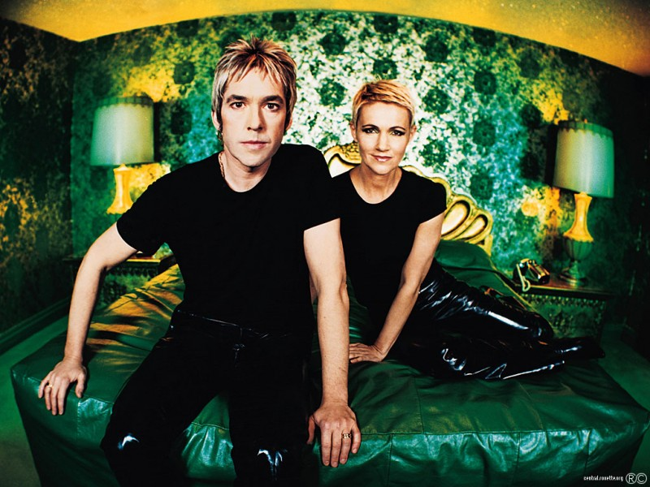
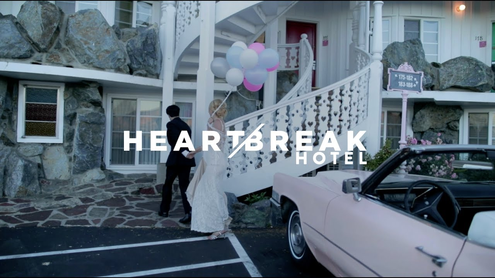
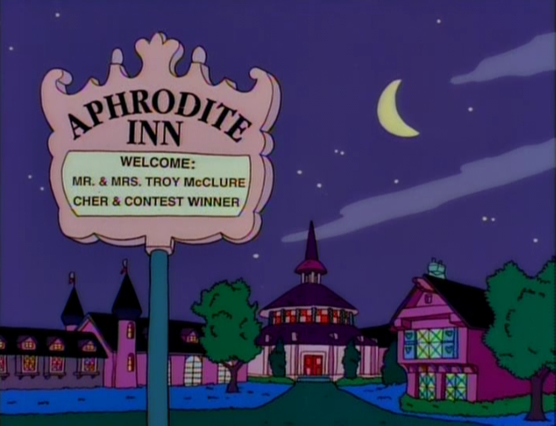

The Madonna Inn has been used in many forms of pop culture, as it is a cool place for photoshoots, movies, tv shows, and music videos. People like Weird Al Yankovic, Grimes, Roxette, and Lady Antebellum have filmed music videos at the Madonna Inn. TV shows have been filmed at the Madonna Inn and inspired by the Inn, the Bachelorette a reality tv show, filmed at the Madonna Inn for an episode in 2010, during the shows 14th season. An episode of the Simpsons was also inspired by the Madonna Inn, featuring a hotel that almost replicated the Inn.